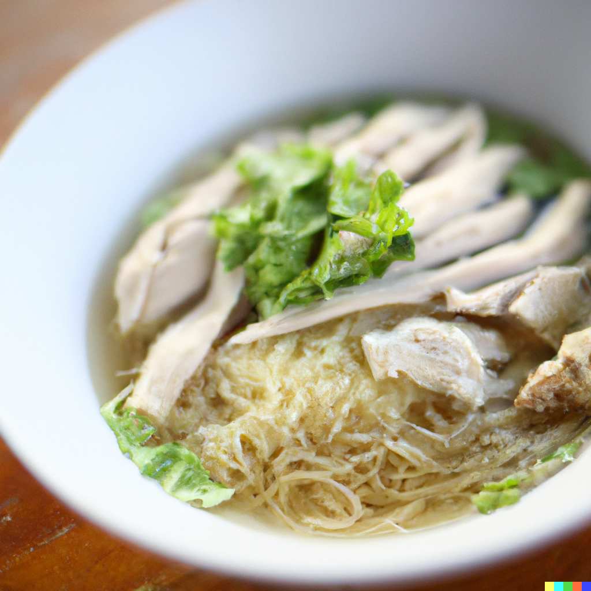

Chicken Soup

Description
Chicken noodle soup is a classic comfort food that is perfect for a chilly day or when you are feeling under the weather.
This soup is not only delicious but also easy to make, making it a staple in many households. The combination of tender chicken, hearty vegetables, and savory broth will warm you up from the inside out.
With a few simple ingredients and some basic cooking skills, you can have a steaming bowl of chicken noodle soup in no time.
Ingredients
- 1 pound boneless, skinless chicken breasts, cut into small pieces
- 8 cups of chicken broth
- 1 large onion, diced
- 2 cloves of garlic, minced
- 2 large carrots, peeled and sliced
- 2 stalks of celery, sliced
- 1 teaspoon dried thyme
- 1 teaspoon dried rosemary
- 1 bay leaf
- 8 ounces of egg noodles
- Salt and pepper to taste
- Chopped fresh parsley for garnish (optional)
Instructions
- In a large pot or Dutch oven, heat some oil over medium-high heat.
- Add the chicken and cook until browned and no longer pink.
- Remove the chicken from the pot and set it aside.
- Add the onion, garlic, carrots, and celery to the pot and sauté until they start to soften, about 5-7 minutes.
- Add the chicken back into the pot, along with the chicken broth, thyme, rosemary, and bay leaf.
- Bring the mixture to a boil, then reduce the heat to low and simmer for 30 minutes.
- Remove the bay leaf from the pot.
- Add the egg noodles and simmer for an additional 8-10 minutes, or until the noodles are tender.
- Season with salt and pepper to taste.
- Ladle the soup into bowls and garnish with chopped parsley, if desired. Serve hot and enjoy!